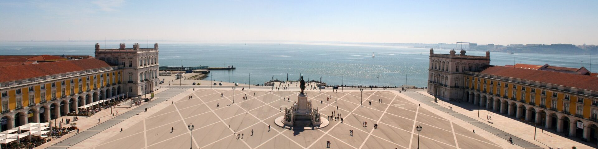

WITS 2026 LISBON, PORTUGAL
Conference Program
36th Workshop on Information Technologies and Systems

Loading program…
All times are local to Lisbon (WET, UTC+0). Bold author names indicate presenters, as marked in the source program.
WITS 2026 LISBON, PORTUGAL
36th Workshop on Information Technologies and Systems

All times are local to Lisbon (WET, UTC+0). Bold author names indicate presenters, as marked in the source program.